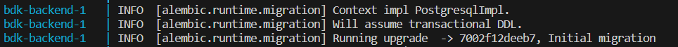
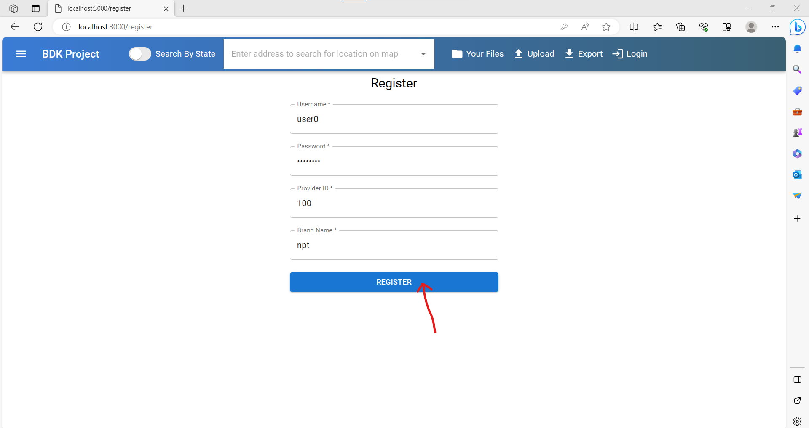

Local Environment Setup
Steps to Setup Your Development Environment
- Clone the repository at github.com/spin-vt/bdk with the following command (choose your preferred method):
git clone git@github.com:spin-vt/bdk.git #(clone with SSH, recommended)git clone <https://github.com/spin-vt/bdk.git> #(clone with HTTPS) - Move into the cloned directory using the following command:
cd bdk - Create a .env file in the bdk directory with the following command (or do it in VS code):
touch .env - Paste the following configurations into the .env file (any lines that are commented (#) need to be changed with your information):
# POSTGRES_USER=postgres # POSTGRES_PASSWORD=password POSTGRES_DB=postgres POSTGRES_HOST_AUTH_METHOD=trust DB_HOST=db DB_PORT=5432 SECRET_KEY=ADFAKJFDLJEOQRIOPQ498689780 JWT_SECRET=ADFAKJFDLJEOQRI DOCKER_IMAGE_BACKEND=ghcr.io/spin-vt/backend DOCKER_IMAGE_WORKER=ghcr.io/spin-vt/worker DOCKER_IMAGE_FRONTEND=ghcr.io/spin-vt/frontend DOCKER_IMAGE_NGINX=ghcr.io/spin-vt/my-nginx JWT_TOKEN_LOCATION=cookies JWT_ACCESS_COOKIE_NAME=token # POSTGRES_ADMIN_EMAIL=example@examplemail.com # POSTGRES_ADMIN_PASSWORD=somepassword NGINX_IMAGE=my-nginx DEVELOP_BACKEND_PORT=8000 DEVELOP_FRONTEND_PORT=3000 MAIL_SERVER=live.smtp.mailtrap.io MAIL_PORT=587 MAIL_USE_TLS=true MAIL_USE_SSL=false CELERY_BROKER_URL=redis://redis:6379/0 CELERY_RESULT_BACKEND=redis://redis:6379/0 - Login to Github Docker registry with credentials to enable pulling images (substitute {your_github_personal_access_token} with your GitHub Personal Access Token and {your_username} with your Github username):
echo {your_github_personal_access_token} | docker login ghcr.io -u {your_username} --password-stdin - Pull the prebuilt images:
docker-compose pull - Move into the front-end directory with the command:
cd front-end - Run the following commands to go into the frontend docker container:
docker run -it --rm -v $(pwd):/app ghcr.io/spin-vt/frontend /bin/sh - In the docker container, run the following command to install npm packages:
npm install - Create a .env.local file in the front-end directory with the following command (or in VS code):
touch .env.local - Paste the following configurations into the .env.local file, and make sure the port number at NEXT_PUBLIC_DEVELOP_BACKEND_URL matches the DEVELOP_BACKEND_PORT in .env (substitute {maptiler_api_key} with your MapTiler API key):
NEXT_PUBLIC_DEVELOP_BACKEND_URL=http://localhost:8000 NEXT_PUBLIC_DEVELOP_MAPTILE_STREET=https://api.maptiler.com/maps/streets/style.json?key={maptiler_api_key} NEXT_PUBLIC_DEVELOP_MAPTILE_SATELITE=https://api.maptiler.com/maps/satellite/style.json?key={maptiler_api_key} NEXT_PUBLIC_DEVELOP_MAPTILE_DARK=https://api.maptiler.com/maps/backdrop-darck/style.json?key={maptiler_api_key} - Return to the bdk directory with the following command:
cd .. - Run the BDK application (you might need to stop the container with ^C and rerun this command because on the first run, Postgres (the database), might not be ready when the migration script is run, causing a no-op and resulting in the database not being correctly setup):
docker-compose up - To verify that the database is setup, you can either:
- Verify if the below message exists in your terminal after running docker-compose up

- Go to the register page and register an account. Check if you get redirected to the profile page

- Verify if the below message exists in your terminal after running docker-compose up